Association sportive
AS Futsal
Jouer, arbitrer,
progresser
Tout savoir sur l'association sportive Futsal : règlement, calendrier et formation de jeune officiel.

- Présentation
- Calendrier
- Le règlement en bref
- Fautes et sanctions
- Devenir jeune officiel
- Quiz d'entraînement
- Documents officiels
🤾 Présentation de l'AS Futsal
| Jour | Niveaux | Horaire |
|---|---|---|
| Lundi | 4e / 3e | 13h – 13h50 |
| Mardi | 6e / 5e | 13h – 13h50 |
- Lieu : les terrains de handball du plateau EPS.
- Début de l'AS : lundi 14 septembre.
- Encadrement : Mme Rattin.
L'AS Futsal, c'est quoi ?
L'AS Futsal est ouverte à tous, débutants comme confirmés : aucun niveau n'est demandé pour venir. Le but est simple — prendre du plaisir sur le temps du midi, autour de matchs.
L'organisation est toujours la même :
🤝 Les valeurs de l'AS : le fair-play, le bon esprit et le plaisir de jouer ensemble.
📅 Calendrier
Les entraînements, compétitions et dates importantes de l'année, triés du plus proche au plus lointain.
🗓️ Ce calendrier se complète au fil de l'année : de nouvelles dates viendront s'ajouter, et certaines peuvent encore être modifiées. Pensez à revenir le consulter régulièrement.
- Filles uniquement
- Tous publics
- Niveaux 6e / 5e
- Niveaux 4e / 3e
Calendrier à venir.
📖 Le règlement en bref
👀 Avant de lire quoi que ce soit, regarde cette vidéo : elle explique l'essentiel du futsal en quelques minutes. Elle se lance directement ici, sans quitter le site.
⚠️ La vidéo présente le futsal en général. Au collège, on joue selon le règlement UNSS, résumé ci-dessous : c'est celui-ci qui s'applique en AS et en compétition scolaire.
⚡ Le futsal en 6 réflexes
👥 5 contre 5
4 joueurs de champ + 1 gardien, et jusqu'à 5 remplaçants. Les changements sont illimités et se font en cours de jeu, dans la zone prévue près du milieu.
⏱️ 4 secondes
Touche, corner, coup franc, relance du gardien : tu as 4 secondes pour jouer. L'arbitre compte avec ses doigts. Au-delà : le ballon change de camp.
🦶 Tout se joue au pied
La touche et le corner se jouent au pied, ballon arrêté. Seule exception : la sortie de but, que le gardien relance à la main.
🚫 Pas de contact
Interdit d'aller au contact pour prendre le ballon, et interdit de tacler — même pour le gardien. On joue le ballon, pas le joueur.
🙌 Pas de hors-jeu
Contrairement au football, il n'y a pas de hors-jeu en futsal. Tu peux te placer où tu veux, y compris devant le dernier défenseur.
🥅 Un but de partout
Un but peut être marqué de n'importe quel endroit du terrain… sauf directement sur un coup d'envoi, une touche ou une relance à la main du gardien.
🏟️ Le terrain et le ballon
- On joue sur un terrain de handball (intérieur ou extérieur) : 38 à 42 m de long, 18 à 22 m de large.
- Les buts mesurent 3 m sur 2 m.
- Le ballon est un ballon de futsal taille 4, qui rebondit peu. ⛔ Le ballon en feutrine est interdit.
👕 L'équipement obligatoire
✅ Obligatoire : protège-tibias, chaussures type tennis, maillot numéroté, short et chaussettes identiques pour toute l'équipe.
⛔ Interdit : tous les bijoux (bagues, colliers, montres, boucles d'oreilles) — ils doivent être retirés avant d'entrer sur le terrain.
👐 Le gardien peut porter un pantalon de survêtement ; genouillères et coudières lui sont conseillées.
🧤 Le gardien de but
- Dans sa moitié de terrain, il a 4 secondes pour relancer.
- Sur une sortie de but, il relance à la main — et il ne peut pas dégager de volée.
- Il ne peut pas prendre à la main une passe faite volontairement au pied par un coéquipier → coup franc indirect.
- Après avoir donné le ballon, il ne peut pas le retoucher dans sa moitié de terrain tant qu'un adversaire ne l'a pas joué.
- S'il attrape le ballon à la main hors de sa surface : coup franc direct pour l'adversaire.
📏 Les distances à connaître
| Situation | Distance |
|---|---|
| Touche, corner, coup franc | 5 mètres pour les adversaires |
| Coup d'envoi | 3 mètres (hors du rond central), chaque équipe dans son camp |
| Pénalty | 6 mètres — les autres joueurs à 5 m, derrière le ballon |
| Coup de pied de pénalité (trop de fautes) | 9 mètres, sans mur |
| Balle à terre | 2 mètres pour les adversaires |
⏲️ La durée des matchs
| Situation | Collège |
|---|---|
| Un seul match dans la journée | 2 × 20 minutes (temps non décompté) |
| Deux matchs dans la journée | 2 × 12 minutes (temps non décompté) |
| Temps de jeu maximum sur une journée | 60 minutes |
Durées du règlement UNSS 2024-2025, championnat collège filles et garçons.
🤝 Avant et après le match : le protocole
Chaque match commence et se termine par un salut des adversaires et des arbitres, au centre du terrain. Ce n'est pas une option : le non-respect du protocole peut être sanctionné.
🎯 En cas d'égalité : les tirs au but
5 tireurs par équipe, choisis parmi les joueurs de la feuille de match. Si l'égalité persiste, on continue en mort subite, en gardant le même ordre de passage.
🚫 Fautes et sanctions
🚫 La règle d'or : pas de contact
Pour prendre le ballon à l'adversaire, le contact est interdit : pas de charge, pas d'appui sur l'adversaire, et aucun tacle en duel — gardien compris. On joue le ballon, jamais le joueur.
⚖️ Les deux coups francs
🔴 Coup franc DIRECT
On peut marquer directement. ⚠️ Il compte comme faute collective.
- Tacler un adversaire en duel
- Charger ou bousculer un adversaire (même de l'épaule)
- Donner ou essayer de donner un coup de pied
- Faire un croche-pied, sauter sur un adversaire
- Tenir un adversaire
- Toucher volontairement le ballon de la main
- Percuter un défenseur immobile (passage en force)
- Cracher sur un adversaire
🟠 Coup franc INDIRECT
Un coéquipier doit toucher le ballon avant qu'un but puisse être marqué.
- Jouer de manière dangereuse
- Faire un mauvais changement ou changer hors de la zone
- Gêner le gardien quand il relance
- Ne pas respecter les 4 secondes
- Perdre seul sa chaussure ou un protège-tibia
- Faire obstacle à un adversaire alors que le ballon n'est pas joué
- Pour le gardien : prendre à la main une passe en retrait, ou retoucher le ballon dans sa moitié de terrain
👍 La règle de l'avantage
Si une faute est commise mais que l'équipe qui la subit garde l'avantage, l'arbitre laisse jouer : l'action va à son terme. Il signale la faute au prochain arrêt de jeu, et elle est quand même comptée comme faute collective.
🔢 Les fautes collectives
Seuls les coups francs directs sont comptés comme fautes collectives. À partir d'un certain nombre de fautes dans la même période, l'adversaire obtient un coup de pied de pénalité à 9 mètres, sans mur, avec le gardien sur sa ligne. 🔄 Le compteur repart à zéro à la mi-temps.
| Durée de la période | Fautes autorisées | Pénalité à 9 m |
|---|---|---|
| 6 minutes | 2 fautes | dès la 3e |
| 8 ou 10 minutes | 3 fautes | dès la 4e |
| 12, 13 ou 15 minutes | 4 fautes | dès la 5e |
| 17 minutes et plus | 5 fautes | dès la 6e |
Tableau du règlement UNSS 2024-2025 (temps non décompté).
🟦 Les trois cartons
⬜ Carton blanc
Une mise en garde : aucun point de pénalité, aucune exclusion.
Une seule fois par équipe et par match — ensuite, ce sera le carton jaune.
🟨 Carton jaune
2 minutes d'exclusion, sans remplacement — l'équipe joue à 4.
3 points de pénalité pour l'équipe. Motifs : antijeu, simulation, contestation, retard de jeu, distance non respectée, maillot retiré.
🟥 Carton rouge
Exclusion définitive du joueur + 4 minutes en infériorité numérique.
5 points de pénalité. Motifs : faute grossière, comportement violent, crachat, insulte, occasion de but annihilée — ou un 2e carton jaune dans le même match.
💡 Les points de pénalité ne changent pas le score : ils s'ajoutent au classement de l'équipe. Ils s'appliquent aussi aux personnes sur le banc — joueurs, jeune coach, enseignants et accompagnateurs.
🧑⚖️ Devenir jeune officiel (jeune arbitre / jeune juge)
Pourquoi devenir jeune officiel ?
- Apprendre à faire des choix et à les assumer.
- Prendre des décisions justes (sécurité, équité).
- Prendre des responsabilités au sein de l'AS.
Le principe du co-arbitrage
Deux jeunes arbitres se déplacent le long des lignes de touche, chacun d'un côté du terrain, toujours en diagonale l'un de l'autre : l'un reste proche de l'action, l'autre se positionne au niveau de l'avant-dernier défenseur. Jusqu'à 5 jeunes officiels peuvent intervenir sur un match (2 arbitres + 1 chronométreur + 1 responsable des fautes/feuille de match + 1 responsable des remplacements).
Les gestes d'arbitrage à connaître
Ces gestes sont ceux du livret officiel « Jeune Arbitre » de l'UNSS — ce sont exactement ceux que tu devras faire sur un match, et ceux que tu verras faire par les arbitres. Le livret complet est téléchargeable dans la rubrique Documents officiels.
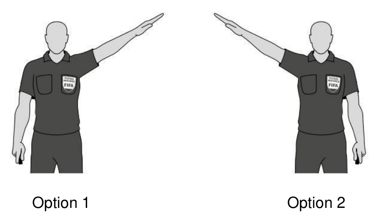
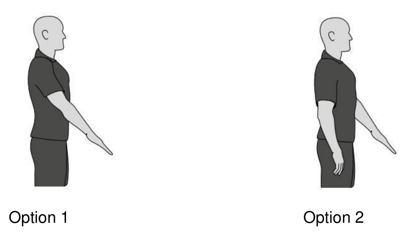
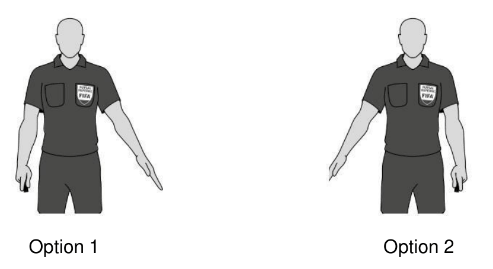
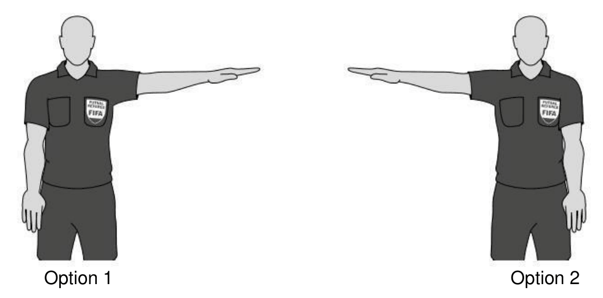
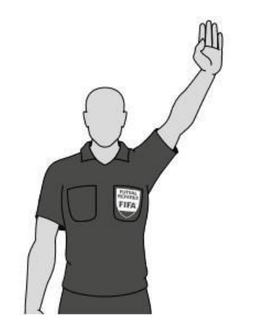
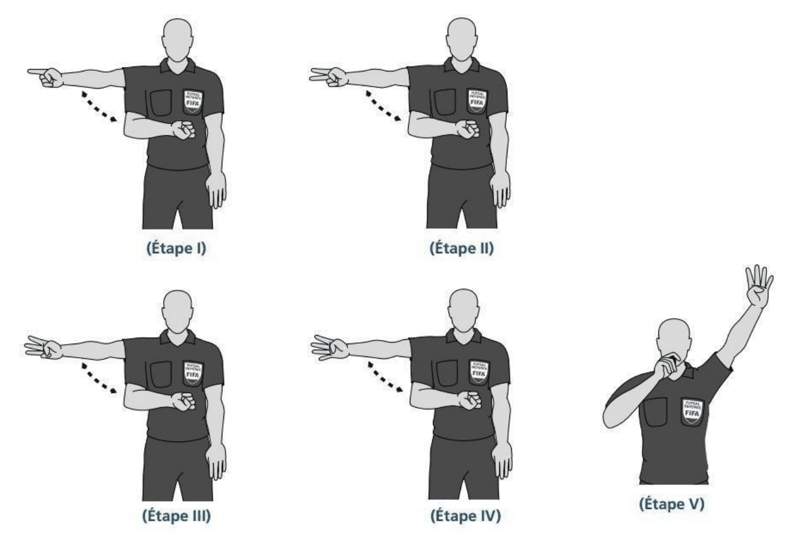
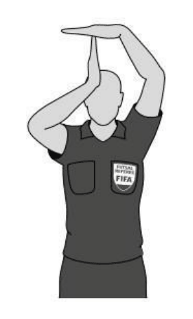
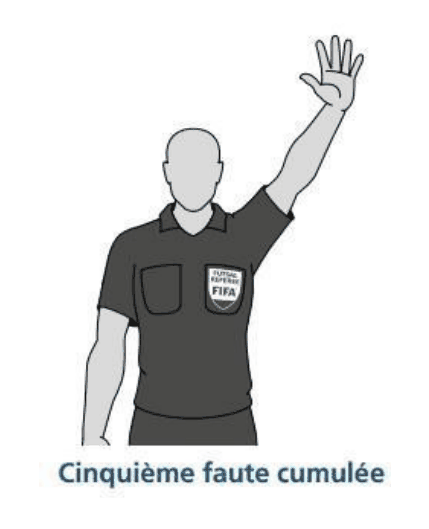
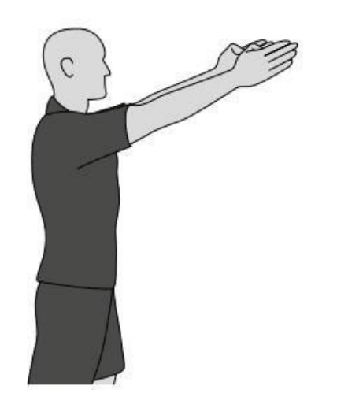
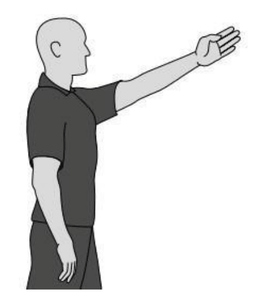
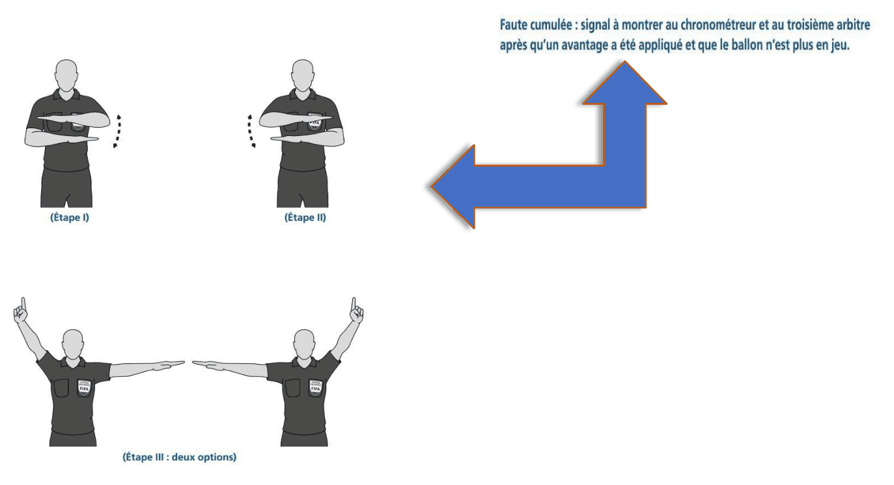
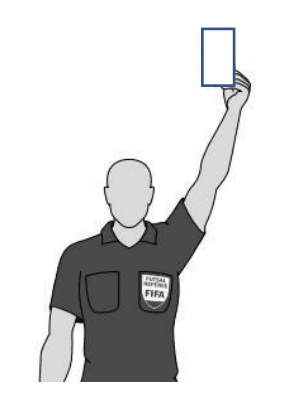
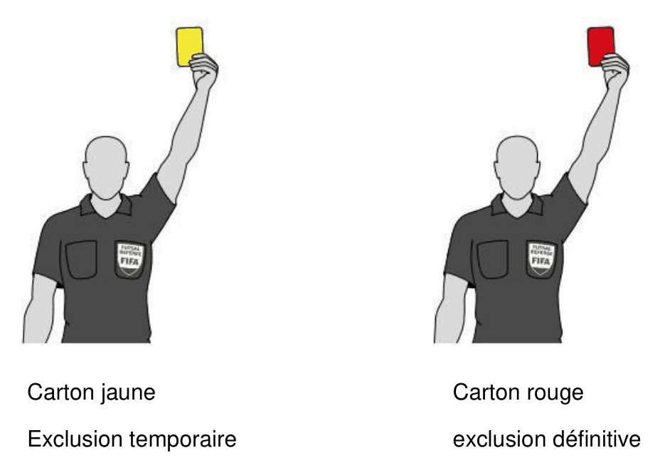
Quand siffler / ne pas siffler
✅ Coup de sifflet obligatoire
- Coup d'envoi (début de match ou après un but).
- Interruption du jeu suite à une faute, ou fin du match.
- Signal pour tirer un coup franc direct ou un pénalty.
- Reprise du jeu après une blessure.
◻️ Coup de sifflet pas nécessaire
- Touche.
- Corner.
- But.
- Reprise du jeu après une balle à terre.
🧠 Quiz d'entraînement « Jeune arbitre »
12 questions pour vérifier que tu connais le règlement. Tu peux le refaire autant de fois que tu veux — tes résultats ne sont visibles que par toi.
📎 Documents officiels
Les deux documents de référence de l'UNSS, à consulter ou à télécharger.